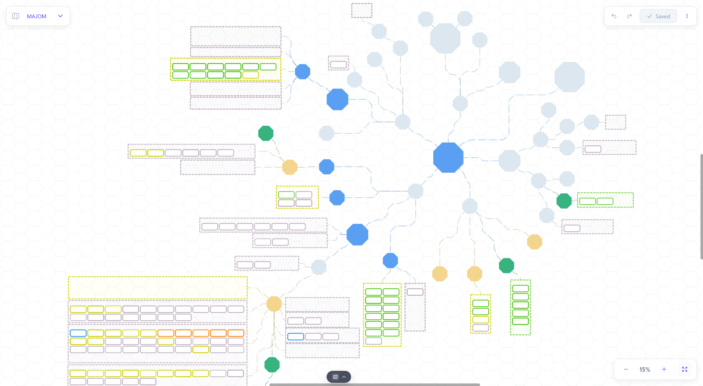

1
Canvas first
Visualize work and structure ideas on a free canvas before committing them to a strict task list.
Visual planning for individuals
Majom helps solo makers, learners, and independent operators turn scattered work into one clear visual system without team process overhead.

Core features
Majom gives individual planning a structure that can hold messy ideas, concrete next actions, and the relationships between them.
1
Visualize work and structure ideas on a free canvas before committing them to a strict task list.
2
Keep goals, current tasks, boards, project context, and daily routines in one connected private workspace.
3
Use AI to clarify thoughts, split goals into smaller work, and organize your own planning process.
Use cases
Majom is built for personal planning moments where ideas, goals, routines, and tasks need to become one coherent system.
Map a concept, connect the goal to tasks, and keep execution visible as the idea becomes real.
Convert research, study notes, and loose thoughts into a visual action map with clear next steps.
Use boards for execution while keeping each card connected to the broader planning context.
Use AI assistance to break down goals, organize ideas, and refine your personal planning process.
Majom helps individuals plan at the level where thinking actually happens: goals, tasks, habits, notes, and the connections between them.
01
Turn large intentions into stories, tasks, and next actions without losing the bigger picture.
02
Track execution on boards while keeping the planning context connected to the canvas.
03
Treat recurring work and focused sessions as part of the same personal operating system.
Majom is for people who need a clear personal workspace before they need a company workflow. It favors individual clarity, visual reasoning, and low-friction planning.
Plan an idea from high-level goal to concrete tasks.
Turn research notes and study plans into action maps.
Keep routines, boards, and priorities connected.
Use AI help without losing ownership of the plan.
Comparison
Majom is individual planning-first. It is not trying to be a team board, a collaborative whiteboard, or a document database.
Trello is board-first. Majom connects boards to visual planning, goals, routines, and AI-assisted personal thinking.
Read comparisonMiro is collaborative whiteboard-first. Majom is a private visual planning workspace for one person's ongoing work.
Read comparisonNotion is document and database-first. Majom is for visual reasoning across goals, tasks, boards, routines, and ideas.
Read comparisonPublic docs
These static markdown files describe Majom for search engines, AI answer engines, and people who want direct product context.
FAQ
Majom is a visual planning workspace for individuals. It helps one person connect goals, tasks, boards, routines, and ideas in a single private workspace.
It is for individual makers, creators, students, independent builders, and people who want a personal planning system instead of a team-first project management tool.
Trello is board-first, Miro is whiteboard-first, and Notion is document/database-first. Majom is designed as a personal visual planning workspace that connects canvas thinking, tasks, boards, routines, and AI-assisted planning.
Majom is currently positioned for individuals rather than teams. It focuses on private personal planning, visual reasoning, and individual execution.
You can plan goals, map ideas visually, break work into tasks, use personal boards, track routines, and use AI assistance to clarify and structure plans.
Majom includes AI-assisted planning to help individuals clarify goals, decompose work, organize ideas, and improve their personal planning process.